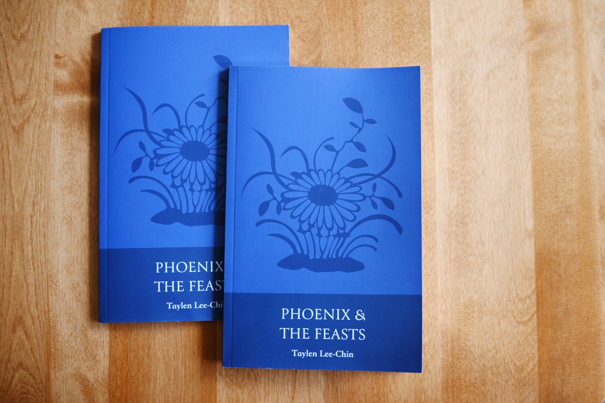
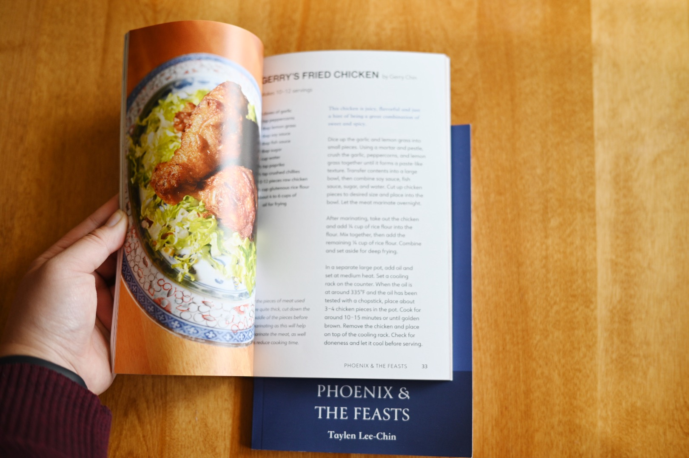
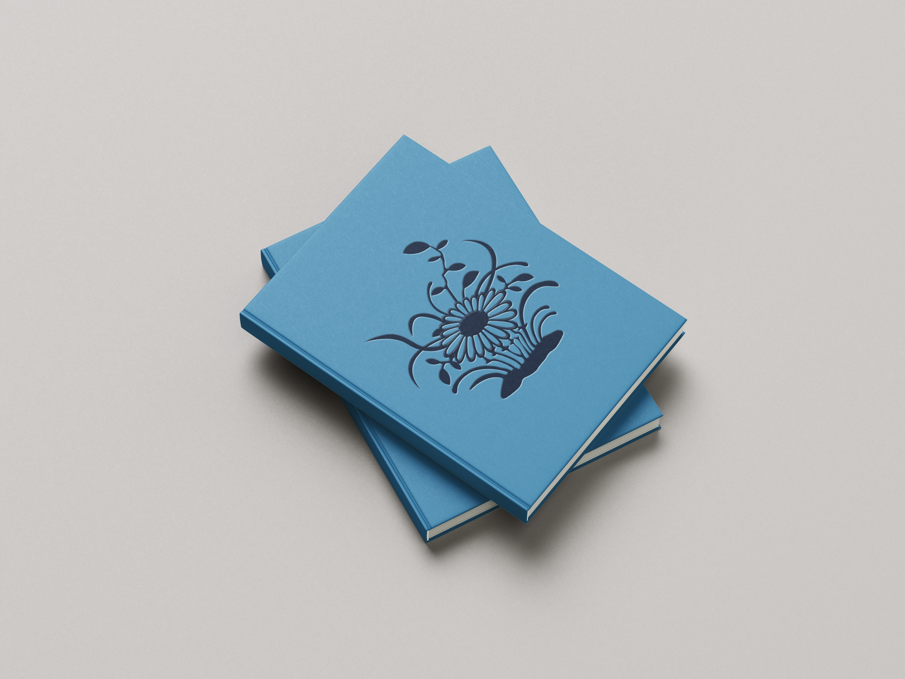
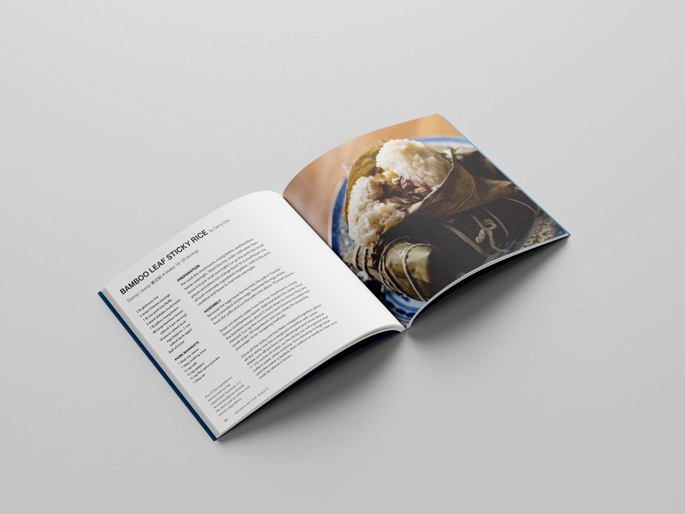
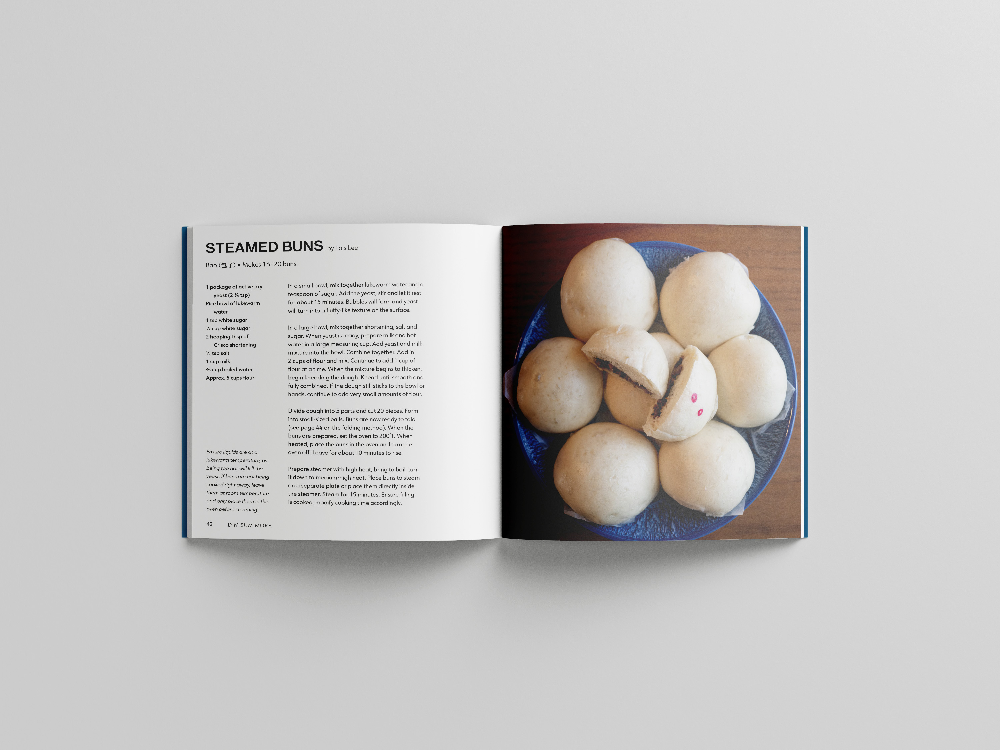
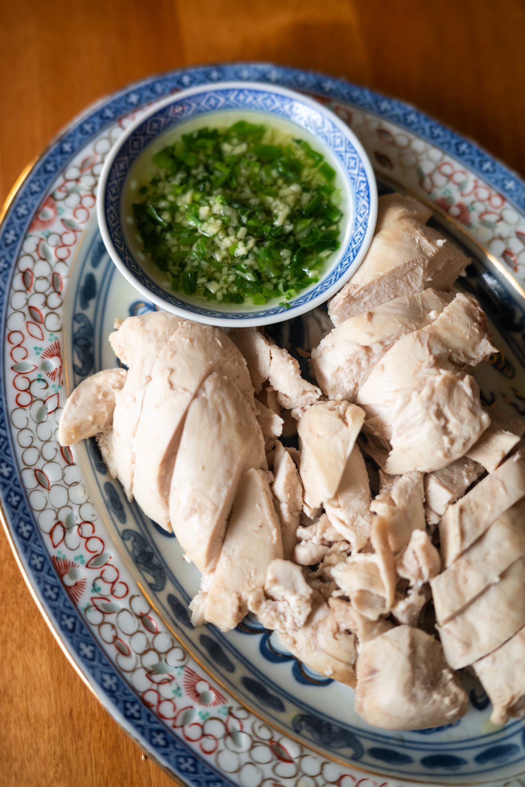
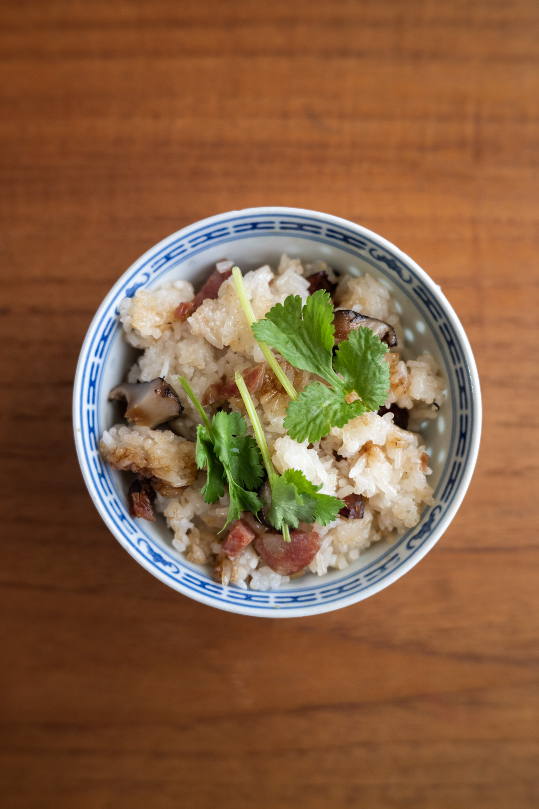
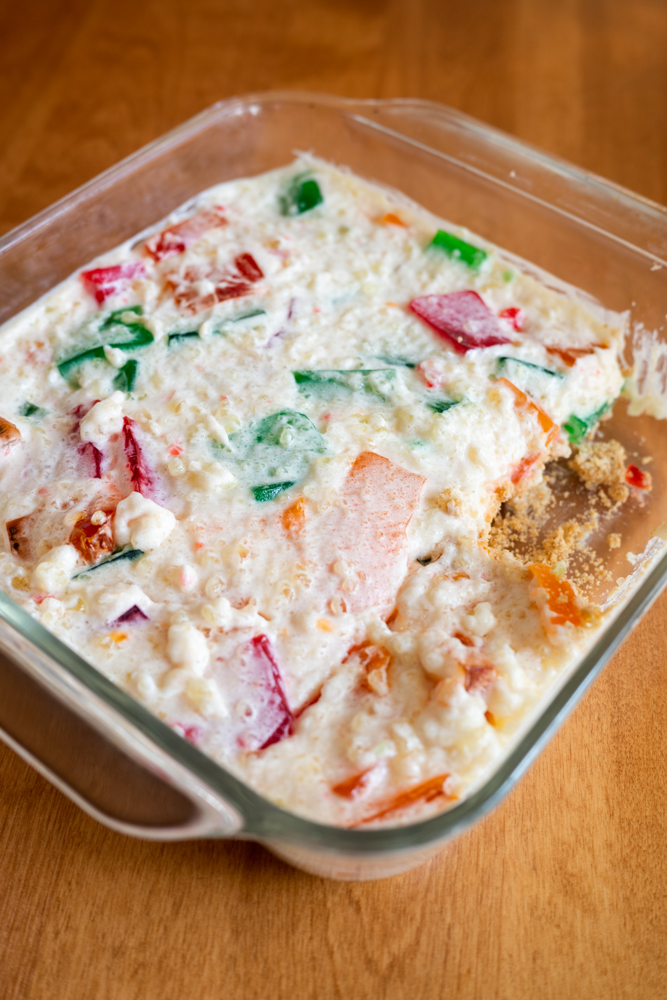
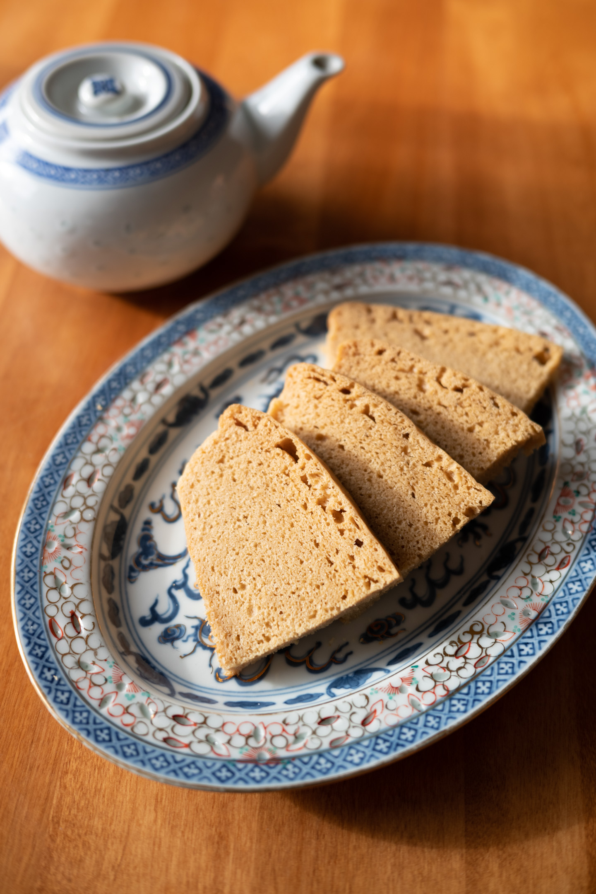
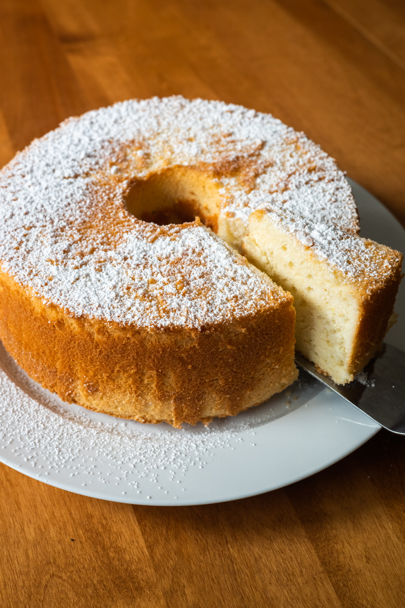

Date
Spring 2023
Role
Graphic Design
Layout Design
Typography
Tools
InDesign
Illustrator
Photoshop
Phoenix & The Feasts is a Chinese-Canadian cookbook memoir. Filled with family recipes, this book discusses some of the memorable stories that go along with these family favourite dishes.
Click here to view a preview of Phoenix & The Feasts.
Click here to view the project photo gallery.
"For the project, she hung out with her grandmother, took pictures of the foods she made, and shared her traditional cooking techniques. It was incredibly soulful." —Mauve Pagé, award-winning SFU Publishing senior lecturer
More Resources
Learn more about the Linglong Porcelain dishes:
Inside the Factory Making the Blue Bowls









